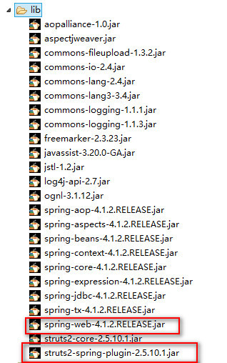
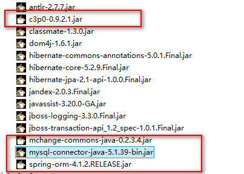
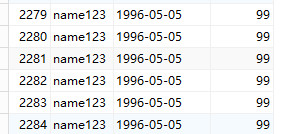

思路
具体项目中一般是web调用services，services调用dao
在web层采用struts2，在services层采用Spring，在DAO层采用hibernate
因此整合分为两个步骤
-
Spring和struts2整合
把Action创建交给SpringIOC 并且不能是单例模式
-
Spring和Hibernate整合
spring配置数据源
spring生成sessionFactory，把数据源注入到sessionFactory，同时指定hibernate核心配置文件位置
Spring和struts2整合
导入相关jar包

配置Spring随启动加载
- 创建spring.xml
<?xml version="1.0" encoding="UTF-8"?>
<beans xmlns="http://www.springframework.org/schema/beans"
xmlns:xsi="http://www.w3.org/2001/XMLSchema-instance"
xmlns:aop="http://www.springframework.org/schema/aop"
xmlns:tx="http://www.springframework.org/schema/tx"
xmlns:context="http://www.springframework.org/schema/context"
xmlns:mvc="http://www.springframework.org/schema/mvc"
xmlns:task="http://www.springframework.org/schema/task"
xsi:schemaLocation="
http://www.springframework.org/schema/beans
http://www.springframework.org/schema/beans/spring-beans.xsd
http://www.springframework.org/schema/tx
http://www.springframework.org/schema/tx/spring-tx.xsd
http://www.springframework.org/schema/aop
http://www.springframework.org/schema/aop/spring-aop.xsd
http://www.springframework.org/schema/context
http://www.springframework.org/schema/context/spring-context.xsd
http://www.springframework.org/schema/mvc
http://www.springframework.org/schema/mvc/spring-mvc.xsd
http://www.springframework.org/schema/task
http://www.springframework.org/schema/task/spring-task.xsd">
</beans>
- 在web.xml配置启动时加载配置
<context-param>
<param-name>contextConfigLocation</param-name>
<param-value>classpath:spring.xml</param-value>
</context-param>
<listener>
<listener-class>org.springframework.web.context.ContextLoaderListener</listener-class>
</listener>
搭建Struts环境
-
创建Action测试类
-
创建struts配置文件
-
在web.xml设置struts过滤器
<filter>
<filter-name>struts2</filter-name>
<filter-class>org.apache.struts2.dispatcher.filter.StrutsPrepareAndExecuteFilter</filter-class>
</filter>
<filter-mapping>
<filter-name>struts2</filter-name>
<url-pattern>/*</url-pattern>
</filter-mapping>
整合
- 用IOC的方式生成Action
<!-- 用Spring生成action对象，注意不要是默认的单例 -->
<bean id="userAction" class="action.UserAction" scope="prototype"></bean>
- 在struts中使用生成的Action对象
<package name="demo" extends="struts-default" namespace="/">
<!-- 注意在class能不能写类路径，这样会创建两次，应为spring已经创建好了，写在Spring中创建的对象id名 -->
<!-- 在struts2-spring-plugin中提供了这个功能 -->
<action name="userAction" class="userAction"></action>
</package>
Spring和Hibernate整合
导入相关jar包
除了hibernate的基本jar包外，还需要数据库连接池（非必须）及spring-orm.jar的配合

在Spring配置中配置连接池
<bean id="dataSource" class="com.mchange.v2.c3p0.ComboPooledDataSource" destroy-method="close">
<property name="driverClass" value="com.mysql.jdbc.Driver" />
<property name="jdbcUrl" value="jdbc:mysql://127.0.0.1:3306/tian?characterEncoding=utf-8" />
<property name="user" value="root" />
<property name="password" value="********" />
</bean>
生成sessionFactory对象
-
服务器启动时加载spring配置文件(之间做好了)，再在Spring中配置加载hibernate配置
-
在spring配置文件中生成sessionFactory对象（单例）
由于sessionFactory并不是直接new出来的而是多行代码实现的，所以不能直接用ioc创建
configuration = new Configuration().configure();
sessionFactory = configuration.buildSessionFactory();
好在Spring提供了一个对象来生成sessionFactory。当引用这个LocalSessionFactoryBean 的时候，比如applicationContext.getBean("localSessionFactoryBean")这样，spring返回的不是LocalSessionFactoryBean 本身，他会自动调用getObject()这个方法，把真正的session factory返回。所以只需要做如下配置
<bean id="sessionFactory" class="org.springframework.orm.hibernate4.LocalSessionFactoryBean">
<!-- 注入数据源 -->
<property name="dataSource" ref="dataSource"></property>
<!-- 指定hibernate核心配置文件 -->
<property name="configLocations" value="classpath:hibernate.cfg.xml"></property>
</bean>
配置hibernate
-
建立实体类
public class User { private int id; private String name; private String birthday; private int score; //getter/setter方法 } -
为实体类建立hibernate配置文件
<?xml version="1.0" encoding="UTF-8"?> <!DOCTYPE hibernate-mapping PUBLIC "-//Hibernate/Hibernate Mapping DTD 3.0//EN" "http://www.hibernate.org/dtd/hibernate-mapping-3.0.dtd"> <hibernate-mapping> <!-- 配置类和表对应 --> <class name="entity.User" table="user"> <!-- 配置主键 --> <id name="id" column="id"> <!-- 设置数据库表主键增长策略 --> <generator class="native"></generator> </id> <!-- 配置其他属性和表字段对应 --> <property name="name" column="name"></property> <property name="birthday" column="birthday"></property> <property name="score" column="score"></property> </class> </hibernate-mapping> -
创建hibernate核心配置文件
<?xml version="1.0" encoding="UTF-8"?> <!DOCTYPE hibernate-configuration PUBLIC "-//Hibernate/Hibernate Configuration DTD 3.0//EN" "http://www.hibernate.org/dtd/hibernate-configuration-3.0.dtd"> <hibernate-configuration> <session-factory> <!-- spring里配置数据库信息 --> <!-- 显示生成的sql语句 ，并格式化--> <property name="hibernate.show_sql">true</property> <property name="hibernate.format_sql">true</property> <!-- 配置自动创建表 --> <property name="hibernate.hbm2ddl.auto">update</property> <!-- 配置所使用的数据库的方言 --> <property name="hibernate.dialect">org.hibernate.dialect.MySQL5InnoDBDialect</property> <!-- 3.配置映射文件--> <mapping resource="entity/User.hbm.xml"/> </session-factory> </hibernate-configuration>
dao和service的注入
Action注入Service，Service注入Dao(Impl)，DaoImp注入sessionFactory
<!-- 用Spring生成action对象，注意不要是默认的单例 -->
<bean id="userAction" class="action.UserAction" scope="prototype">
<property name="userService" ref="userService"></property>
</bean>
<bean id="userService" class="service.UserService">
<!-- 在代码中是接口，注入的是实现类 -->
<property name="userDao" ref="userDaoImpl"></property>
</bean>
<bean id="userDaoImpl" class="dao.UserDaoImpl">
<property name="sessionFactory" ref="sessionFactory"></property>
</bean>
测试
userAction中的代码
@Override
public String execute() throws Exception {
userService.addUser("name123", "1996-05-05", 99);
return null;
}
userService代码
public void addUser(String name,String brithday,int score){
userDao.add(name,brithday,score);
}
userDaoImpl代码
@Override
public void add(String name, String brithday, int score) {
Session session = sessionFactory.openSession();
User u = new User();
u.setName(name);
u.setBirthday(brithday);
u.setScore(score);
session.save(u);
session.close();
}
通过url访问action,查看数据库是否添加了数据

开启事务
<!-- 创建事务管理器 -->
<bean id="transactionManager" class="org.springframework.orm.hibernate4.HibernateTransactionManager">
<property name="sessionFactory" ref="sessionFactory"></property>
</bean>
<!-- 开启事务注解 -->
<tx:annotation-driven transaction-manager="transactionManager"/>
在UserService中添加注解
@Transactional
public class UserService {
//...
}
使用HibernateTemplate
生成HibernateTemplate，并在userDaoImpl中注入HibernateTemplate
<bean id="userDaoImpl" class="dao.UserDaoImpl">
<property name="hibernateTemplate" ref="hibernateTemplate"></property>
</bean>
<bean id="hibernateTemplate" class="org.springframework.orm.hibernate4.HibernateTemplate">
<property name="sessionFactory" ref="sessionFactory"></property>
</bean>
在UserDaoImpl.java里使用HibernateTemplate
public class UserDaoImpl implements UserDao {
private HibernateTemplate hibernateTemplate;
public void setHibernateTemplate(HibernateTemplate hibernateTemplate) {
this.hibernateTemplate = hibernateTemplate;
}
@Override
public void add(String name, String brithday, int score) {
User u = new User();
u.setName(name);
u.setBirthday(brithday);
u.setScore(score);
hibernateTemplate.save(u);
}
}
错误解决
HTTP Status 500 - Could not open Hibernate Session for transaction; nested exception is java.lang.NoClassDefFoundError: org/hibernate/engine/transaction/spi/TransactionContext
原因是配置文件中用的是hibernate4,而导入的包是5.x的
<!-- 创建事务管理器 -->
<bean id="transactionManager" class="org.springframework.orm.hibernate4.HibernateTransactionManager">
<property name="sessionFactory" ref="sessionFactory"></property>
</bean>
解决方法1：将hibernate-core-5.1.39.Final.jar换成hibernate-core-4.2.4.Final.jar
解决方法2：使用高版本的spring会支持org.springframework.orm.hibernate5.HibernateTransactionManager
这里使用的是方法1
另一种整合方式
还有一种整合方式是把hibernate核心配置全部都放到spring中,不需要再建立hibernate核心配置文件了
<bean id="sessionFactory" class="org.springframework.orm.hibernate4.LocalSessionFactoryBean">
<!-- 注入数据源 -->
<property name="dataSource" ref="dataSource"></property>
<property name="hibernateProperties">
<props>
<prop key="hibernate.show_sql">true</prop>
<prop key="hibernate.format_sql">true</prop>
<prop key="hibernate.hbm2ddl.auto">update</prop>
<prop key="hibernate.dialect">org.hibernate.dialect.MySQL5InnoDBDialect</prop>
</props>
</property>
<property name="mappingResources">
<list>
<value>entity/User.hbm.xml</value>
</list>
</property>
</bean
注解方式搭建
引入struts2-convention依赖，让struts配置文件中取消对Action的配置
Spring 自动扫包
<context:component-scan base-package="dao.daoImpl" />
daoImpl添加注解标签
import org.springframework.context.annotation.Scope;
import org.springframework.stereotype.Component;
import dao.UserDao;
@Component(value="UserDaoImpl")
@Scope(value="singleton")
public class UserDaoImpl implements UserDao{
@Override
public void sayHello() {
System.out.println("Hello");
}
}
在Action里装配dao
import javax.annotation.Resource;
import org.apache.struts2.convention.annotation.Action;
import org.apache.struts2.convention.annotation.Result;
import org.apache.struts2.convention.annotation.Results;
import com.opensymphony.xwork2.ActionSupport;
import dao.UserDao;
@Results({
@Result(name="ok",location="/test.jsp"),
@Result(name="failure",location="/failure.jsp")})
@Action(value="test")
public class UserAction extends ActionSupport{
private static final long serialVersionUID = 1L;
@Resource(name="UserDaoImpl")
UserDao userDao;
@Override
public String execute() throws Exception {
userDao.sayHello();
return "ok";
}
}